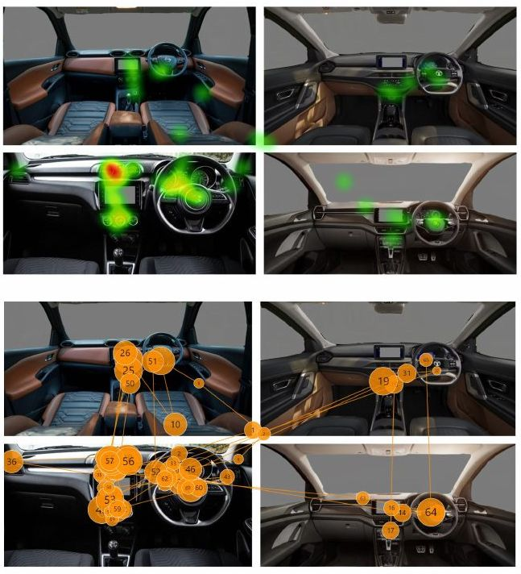

Research paper · Emotional Design, IIT Roorkee
Do different personalities want different car interiors?
Mid-segment cars in India get one interior for every buyer. I ran an eye-tracking study to test whether personality changes what people are drawn to.
- 16 drivers, sorted into OCEAN personality types with the Big Five Inventory (BFI-10).
- Shown car interiors across 4 themes: Comfort, Concise, Hard and Technological. The themes came from Kansei words.
- Fixation time analysed with a two-way ANOVA in JASP, plus post-hoc tests.
p < .001Personality changed fixation time (F = 14.93)
p < .001Theme changed fixation time (F = 11.25)
p = .039Personality × theme interact
What it led toDifferent personalities favour different interior themes. That's evidence for small, modular, personality-tuned interior options instead of one interior for everyone. I also reported my own limitation: the themes were shown in a fixed order, which skewed attention.
